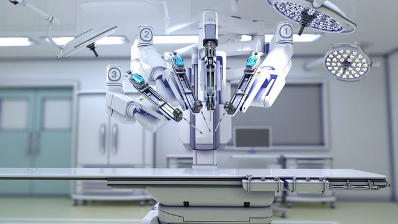

HMS
(current)

About robotic surgery
Robotic surgery has been rapidly adopted by hospitals in the United States and Europe for use in the treatment of a wide range of conditions. The most widely used clinical robotic surgical system includes a camera arm and mechanical arms with surgical instruments attached to them. The surgeon controls the arms while seated at a computer console near the operating table. The console gives the surgeon a high-definition, magnified, 3-D view of the surgical site. The surgeon leads other team members who assist during the operation.
Advantages
Surgeons who use the robotic system find that for many procedures it enhances precision, flexibility and control during the operation and allows them to better see the site, compared with traditional techniques. Using robotic surgery, surgeons can perform delicate and complex procedures that may have been difficult or impossible with other methods.
The benefits of minimally invasive surgery include:
Fewer complications, such as surgical site infection
Less pain and blood loss
Quicker recovery
Smaller, less noticeable scars
Risks
Robotic surgery involves risk, some of which may be similar to those of conventional open surgery, such as a small risk of infection and other complications. Robotic surgery may not be available at medical centers in your geographic location.